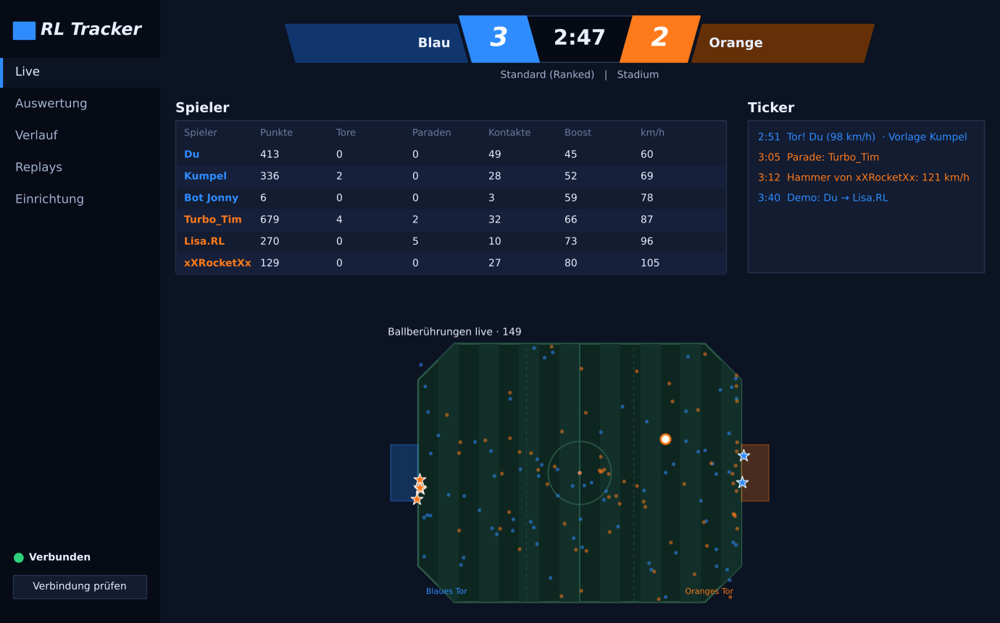
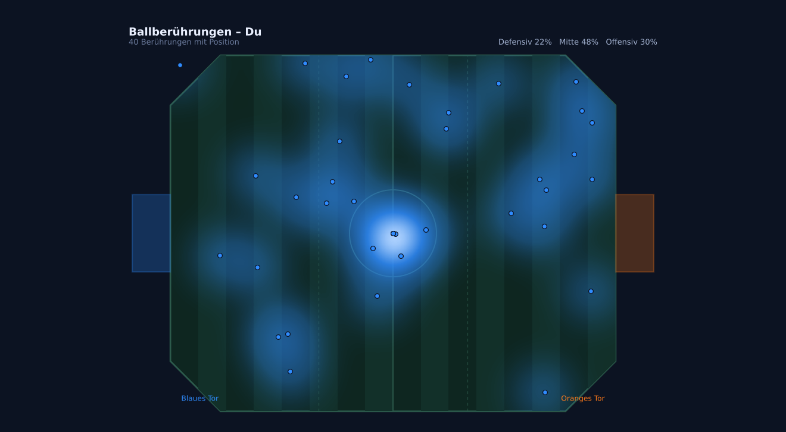
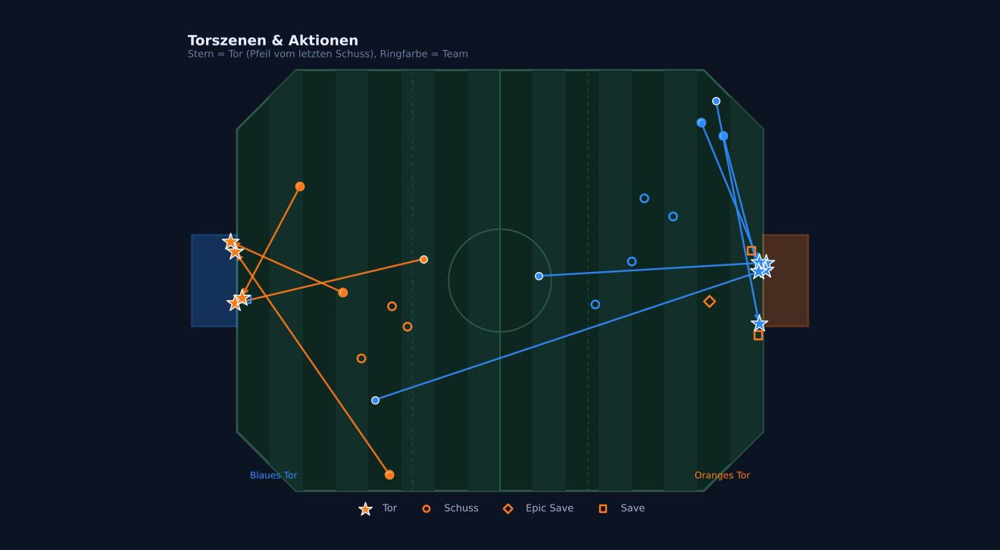
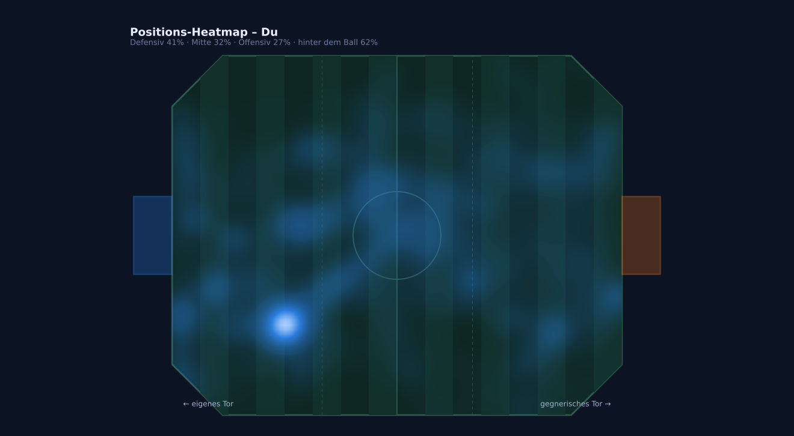
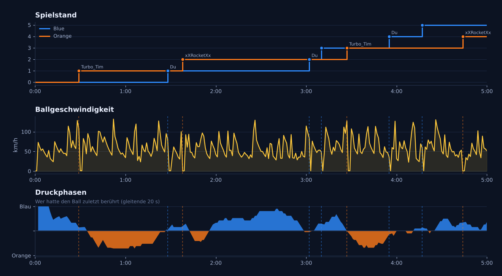

RL Tracker
Neueste VersionLade die neueste Version über den Download-Knopf.
RL Tracker läuft neben Rocket League, zeichnet dein Match live auf und zeigt dir danach Heatmaps, Torszenen, Boost-Karten und über 40 Werte pro Spieler. Kostenlos, ohne Konto – alles bleibt auf deinem PC.

Die Auswertung öffnet sich automatisch, sobald das Match vorbei ist. Jedes Match wird gespeichert, so siehst du auch, wie du dich über Wochen entwickelst.
Heatmaps aller Ballberührungen – für dich, dein Team oder alle Spieler. Auf Wunsch aus Sicht des eigenen Teams, damit du Matches auf beiden Seiten vergleichen kannst.

Jedes Tor mit der Position des letzten Schusses, dazu Schüsse, Paraden, Klärungen und Lattentreffer auf einer Karte.

Speicherst du nach dem Match das Replay, wertet RL Tracker es automatisch aus: wo jeder Spieler die ganze Zeit war, wie viel Strecke, Tempo und Luftzeit, wie gut das Boost-Management war.

Spielstand, Ballgeschwindigkeit und Druckphasen auf einer Zeitachse. Daneben deine Siegquote und Punkte über alle gespeicherten Matches.

Ein normaler Windows-Installer, ohne Mods und ohne Konto.
RLTracker-Setup.exe laden und starten. Warnt Windows, klick auf „Weitere Informationen“ und dann „Trotzdem ausführen“.
Der Installer fragt, ob RL Tracker die offizielle Stats-Schnittstelle von Rocket League einschalten darf. Nur damit kommen die Live-Daten an.
Rocket League neu starten und in ein Match oder ins Freeplay gehen. Nach dem Match öffnet sich die Auswertung von selbst.
Die App meldet sich, wenn es eine neue Version gibt, und installiert sie mit einem Klick. Deine Matches bleiben dabei erhalten.
RL Tracker nutzt die offizielle Stats-Schnittstelle, die Psyonix für Overlays und Tools anbietet. Die App verändert keine Spieldateien, liest keinen Spielspeicher, installiert keine Mods und verschafft dir keinen spielerischen Vorteil. Sie wertet nur aus, was das Spiel selbst bereitstellt.
Windows warnt bei neuen Programmen, die noch nicht digital signiert sind. Klick auf „Weitere Informationen“
und dann auf „Trotzdem ausführen“. Wer sichergehen will, vergleicht die Prüfsumme der Datei mit der auf der
Download-Seite: in PowerShell Get-FileHash RLTracker-Setup.exe.
Keine. Matches und Einstellungen liegen in Dokumente\RLTracker auf deinem PC. Die App fragt beim Start
nur bei GitHub nach, ob es eine neue Version gibt – das lässt sich abschalten.
Ja, mit beiden – auch wenn beide installiert sind. Der Installer stellt alle gefundenen Installationen ein.
Windows-Einstellungen, Apps, RL Tracker, Deinstallieren. Dabei wird die Stats-Schnittstelle wieder
ausgeschaltet. Deine gespeicherten Matches bleiben in Dokumente\RLTracker, bis du den Ordner löschst.